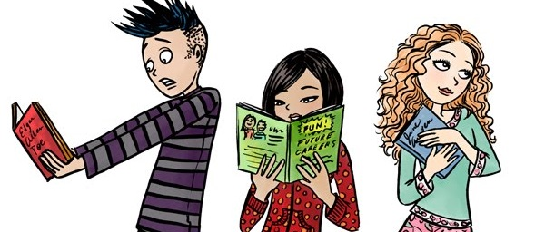

Refrescar a mente e arriscar novos caminhos literários é muito importante para seu crescimento pessoal e intelectual. Porém, muitas vezes, a lista de livros que você gostaria de ler é muito grande e saber por qual começar torna-se uma tarefa difícil. Ou você está sem opções e não sabe onde procurar novas alternativas.
Não importa qual a sua situação, é muito simples resolver seu dilema literário. Acompanhe abaixo uma ótima lista com autores renomados e grandes livros da literatura, pesquise e encontre um de seu interesse. Boa sorte!

Bons livros como estes que serão citados nos ajudam a desenvolver o nosso senso crítico, trazendo assim a capacidade de ler e interpretar cenários a nossa volta e ao mesmo tempo nos posicionar de maneira efetiva e contundente quer a favor, quer contra ou ainda com uma postura neutra.
| Nome | Obras Literárias | Data de nascimento e morte |
|---|---|---|
| Machado de Assis | Dom Casmurro | (1839-1908) |
| José Saramago | Ensaio Sobre a Cegueira | (1922-2010) |
| William Shakespeare | Romeu e Julieta | (1564-1616) |
| Franz Kafka | A Metamorfose | (1883-1924) |
| Gabriel García Márquez | Cem anos de solidão | (1927-2014) |
| Antoine de Saint-Exupéry | O Pequeno Príncipe | (1900-1944) |
| Clarice Lispector | A hora da estrela | (1920-1977) |
| Luís de Camões | Os Lusíadas | (1524-1580) |
Quando criticamos algo precisamos fazer baseado em parâmetros concretos e precisamos demonstrar não só o conhecimento de causa, mas capacidade de discernir entre o simples e o complexo, o trivial e o inovador e assim por diante.
